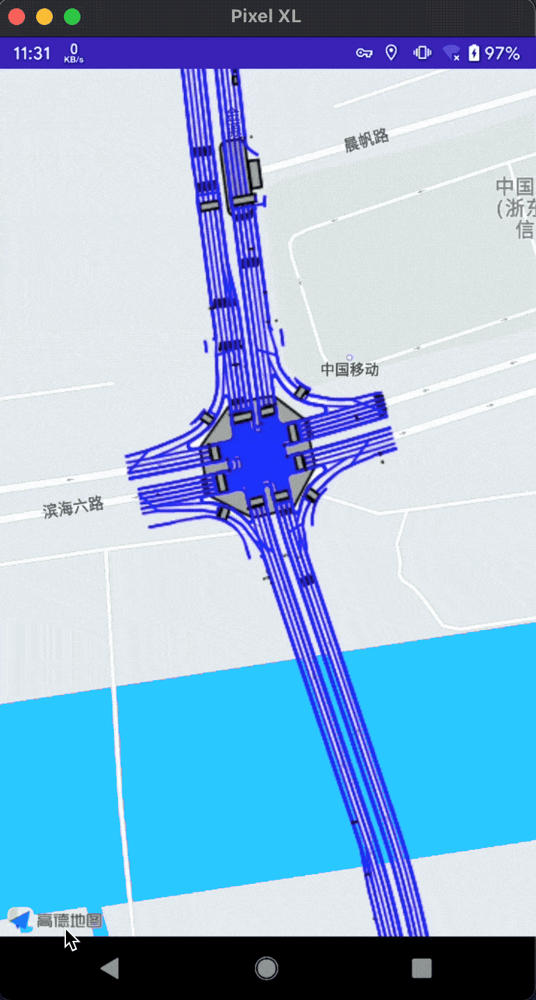

在高德地图上展示 Shapefile 中的数据

这篇介绍一下如何将 Shapefile 转换为 WMS 图层并在高德地图上展示出来。
如果你是一名 GIS 开发者，那么你对 Shapefile 一定不陌生，它是一种用于存储地理要素的几何位置和属性信息的文件格式。具体来说，它主要通过几何图形（点、折线、多边形）存储道路、桥梁、河流等空间对象的几何位置。另外，它还可以通过不同的文字、颜色等标识出这些空间对象的属性。
很多地图制作工具都支持导出 shp 格式的数据（比如 ArcGIS），但是，如果想要通过第三方地图 SDK 加载这些数据，往往需要先做一步转换操作，比如转换为 WMS 图层 或者 KML 图层。这里，我就以高德地图为例，介绍如何通过 GeoServer 将 Shapefile 转换为 WMS 图层并加载到 Android 地图 SDK 中。
将 Shapefile 转换为 WMS
GeoServer 安装
GeoServer 是一个提供地图创建和数据分享服务的开源软件。我们可以通过官网下载 GeoServer 最新版本并启动本地服务 (sh ./bin/start.sh)，然后根据教程登录进入 Web 管理后台。
发布 Shapefile
参考官方例子发布 Shapefile，操作流程：
- Add new workspace
- Add new store (data source)
- Add all the new layers from the store
除此之外，我们还可以在 Layer Groups 中将多个 Layer 添加到同一个分组中。
访问 WMS
当我们将 Shapefile 中的数据全都转换为 WMS 图层之后，就可以通过 GeoServer 的 Layer Preivew 查看图层了。假设你将多个图层添加到了 Layer Group 中，那么访问路径就是：http://localhost:8080/geoserver/wms
需要注意的坑
在发布 Layer 时需要注意一下 SRS 的问题，比如我就遇到了无法读取 Native SRS 的问题。不过，由于绝大部分空间坐标系一般都是使用 EPSG:4326，如果你也遇到了这个问题，可以将 Declared SRS 设置为 EPSG:4326 来解决这个问题，参考：GeoServer: Coordinate Reference Systems
在高德地图上加载 WMS 图层
对于高德地图 Android SDK，可以通过自定义 UrlTileProvider 来加载 WMS 图层，具体的实现方式我参考了这篇文章：在高德地图 Android SDK 上添加 GeoServer 发布的 WMS 图层。
大致的实现过程是，首先根据切片的像素点坐标、切片大小和缩放层级计算出距离，再将距离转换为经纬度，最后再将经纬度坐标进行一次转换，从高德地图使用的 GCJ02 坐标转换为 WGS84 坐标（使用 JZLocationConverter-for-Android），最后才能得到正确的 BBOX 范围。
示例代码见：AmapDemo
